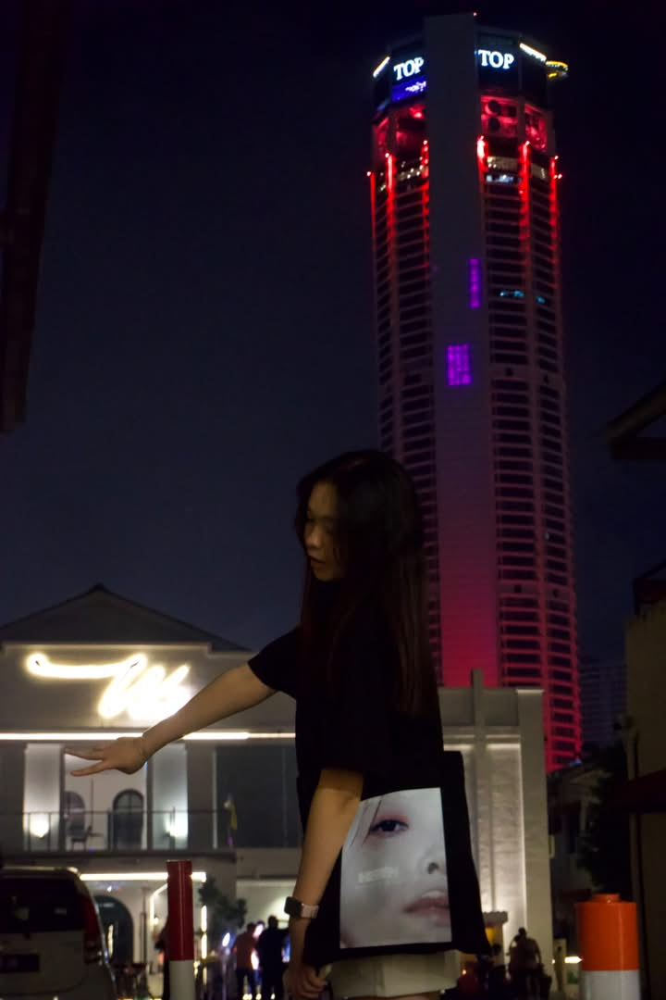

Photographer · Video Editor · Content Creator
Based in Malaysia. Crafting visual stories through the lens — from wedding films to commercial campaigns, with a precision for light, moment, and motion.
View Work
Selected Work
Wedding Cinematic Film
Videography · Color Grading
Portrait Session
Photography · Retouching
Corporate Event Coverage
Videography · Editing
Food & Commercial
Photography · Editing
Social Media Campaign
Content Creation · Design
About
I'm Alicia Wong, a Communication and Media student at Han Chiang University College of Communication, specialising in Media Production. My work spans wedding films, corporate events, commercial content, and digital campaigns.
With experience at Image Farm Production and Vivid Art Production in Penang, I've had the privilege of contributing to productions both big and intimate — from PDC campaigns to heartfelt wedding stories.
Fluent in Chinese, English, and Malay. Always curious, always shooting.
Camera & Production
DSLR/Mirrorless, Gimbal, Wedding & Event Videography
Video Editing
Premiere Pro, DaVinci Resolve, Color Grading, Motion Graphics
Photography
Portrait, Event, Food, Property, Lightroom & Photoshop
Design & Social
Illustrator, After Effects, Canva, Content Planning
Experience
Nov 2025 – Mar 2026
Vivid Art Production, Penang
Worked as wedding assistant and second cameraman. Edited 10+ wedding, event, and promotional videos. Produced food photography, social media campaigns, posters, and property photography for Airbnb clients.
Jan 2024 – Mar 2024
Image Farm Production Sdn Bhd, Penang
Supported corporate, commercial, and event productions. Operated professional lighting, monitors, sliders, and gimbals. Contributed to PDC Chinese New Year Campaign, Georgetown Festival, and Gano Excel Event.
2024 – 2026
Han Chiang University College of Communication
Media Production (Honors)
2022 – 2024
Han Chiang University College of Communication
Broadcasting Major
Contact
Open for freelance projects, collaborations, and full-time opportunities.